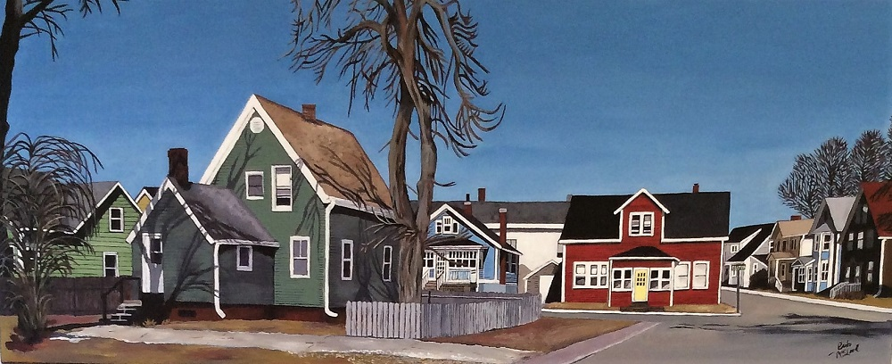
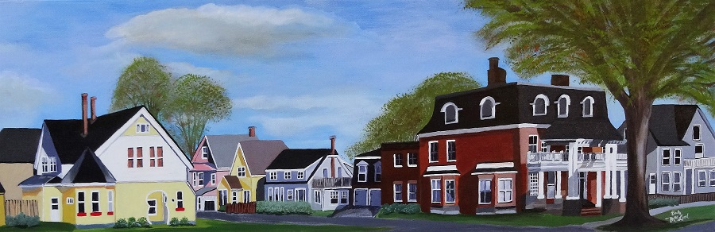
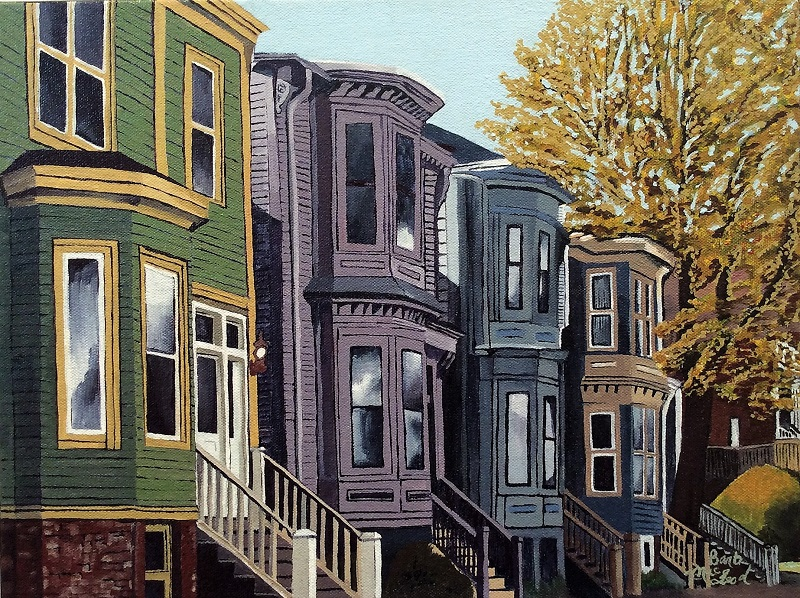
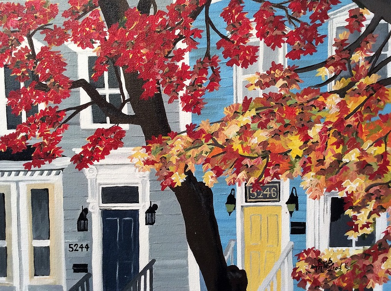

The first painting I completed was of Cogswell Street in Halifax, Nova Scotia. My daughter Jessica, who lives in Halifax, now calls that her own. Since then I have enjoyed doing many streetscapes. The scenes are familiar to many and for that reason are my most popular paintings.
Please scroll down to see the entrie series.

Acrlyic on Stretched Canvas over 1 1/2" wood frame, 16"height x 40"width. Price$700

Acrlyic on Stretched Canvas over 3/4"" wood frame, 12"height x 36"width. Price$500

Acrlyic on Stretched Canvas over 1 1/2" wood frame, 12"height x 16"width. Price$300

Acrlyic on Stretched Canvas over 1 1/2" wood frame, 12"height x 16"width. Price$300